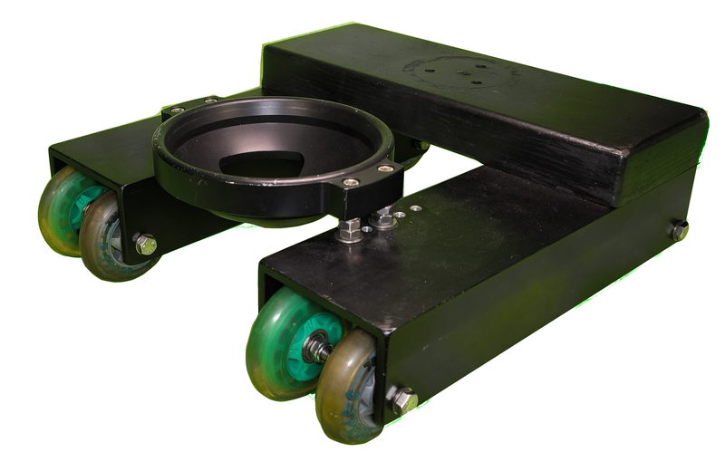

Dana Dolly (150mm Bowl)
Inventory
1 Available
Overview
The Dana Dolly is a versatile camera platform that provides smooth, linear camera movement for cinematic shots. Constructed with robust, high-grade materials, this system is designed to handle heavier camera setups and intense production schedules. This particular model features a 150mm bowl, making it ideal for larger fluid heads and supporting big cinema or broadcast camera rigs with ease.
Key Features
- 150mm Bowl Mount: Suited for larger fluid heads and substantial cinema camera configurations.
- Heavy-Duty Construction: Engineered to support the added weight of bigger camera packages.
- Track Compatibility: Runs smoothly on standard speed rails or pipe of various lengths.
- Compact & Portable: Despite its capacity, it can be quickly disassembled for on-the-go shoots.
- Adjustable Wheel Assemblies: Reduces noise and vibration for consistently smooth slides.
- Fast, Tool-Free Setup: Ensures quick deployment to meet tight production schedules.
Typical Usage Scenarios
- Smooth Tracking Shots: Perfect for dramatic push-ins, tracking, or reveal shots with heavier rigs.
- Professional Film & Broadcast: Designed to support the larger cameras often used in high-end productions.
- On-Location Work: Easy to set up on stands or low-level risers, adapting to various shooting environments.
Advantages of a 150mm Bowl System
- Expanded Compatibility: Many full-size cinema and broadcast fluid heads use a 150mm bowl standard.
- Robust Weight Support: Offers enhanced stability and support for heavier, more complex camera builds.
Considerations
- Track & Support Quality: Using straight, well-maintained rails and sturdy support stands is crucial for optimum performance.
- Weight Capacity: Confirm the recommended load limit, especially with heavier camera rigs.
- Setup Surface: Ensure the dolly is placed on level surfaces or properly supported stands to maintain stability.
